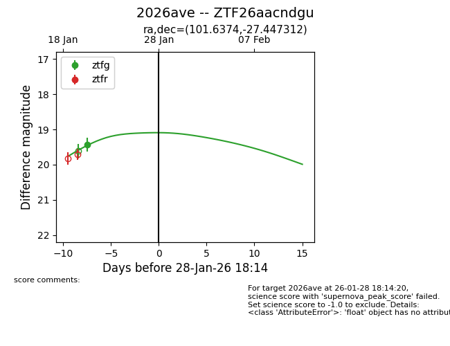
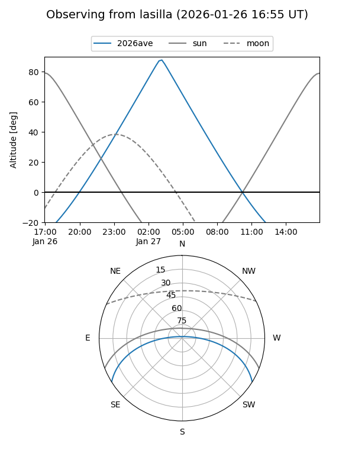
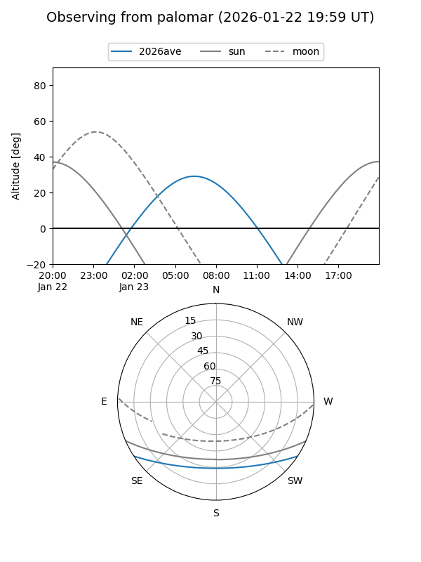

2026ave
Target 2026ave at 2026-01-24 18:01
Aliases and brokers:
FINK: link
Lasair: link
ALeRCE: link
TNS: link
YSE: link
alt names
ZTF26aacndgu (ztf,fink_ztf)
2026ave (tns,yse)
Coordinates:
equatorial (ra, dec) = 101.6374,-27.44731
equatorial (HMS+DMS) = 06:46:32.98,-27:26:50.32
galactic (l, b) = (237.2852,-13.12183)
Flags:
Photometry:
last ztfg=19.43
1 ztfg detections
Lightcurve

Visibility


Additional plots